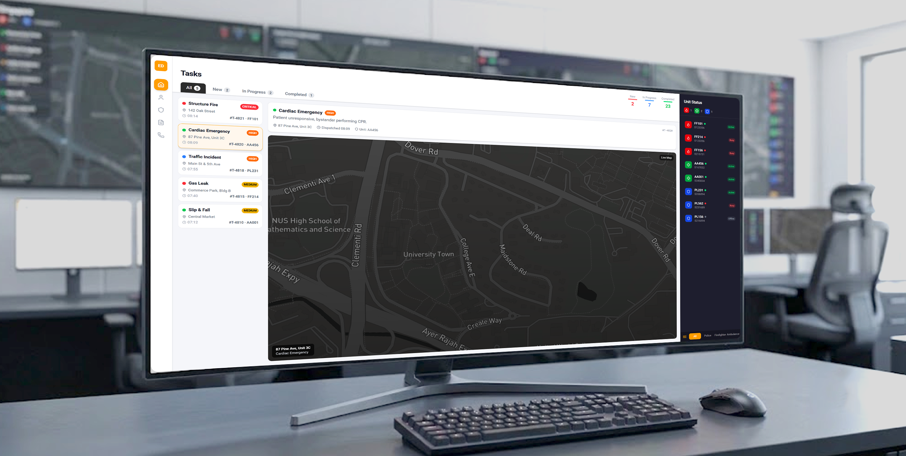

Pulse Dispatch: Web Console
The other half of the Pulse system: a streamlined web interface for emergency dispatch teams, built for high call volume, live AI assisted transcripts, and coordinating nearby volunteer responders in real time.

Same incident, dispatcher's point of view
While a bystander experiences an emergency through the Pulse app, the same incident lands on a dispatcher's screen as one of many simultaneous calls. This console was designed to give dispatchers clarity and speed under that load.
The core problem it solves is cognitive overload. Where ACES surfaces every task and every unit in one dense, undifferentiated view, Pulse Dispatch filters both by default. Tasks split by workflow stage, units split by division. A dispatcher only ever looks at the slice of information relevant to the decision in front of them, not the entire system at once.
- Color is functional, not decorative. Red, orange, and gold mark severity, while a separate red, green, and blue code division (fire, ambulance, police), reused consistently across the task list, map, and unit sidebar.
- Tasks filter by workflow stage: All, New, In Progress, Completed. A dispatcher jumps straight to what is unhandled.
- Units filter independently by division: All, Police, Firefighter, Ambulance. Narrowing straight to who is free in the division needed.
- Selecting one task updates the detail card, the map, and the location pin together, from a single click.
One conversation that shaped the whole project
Research centered on an interview with Ren Jie, a Senior Staff Officer in Singapore's Emergency Medical Services. His account of the ageing ACES system, and what it gets wrong from a UI/UX standpoint, became the direct brief for this project: an upgraded, more intuitive replacement for ACES itself.
Ren Jie
"It has served us well for the past years, but if you're coming from a UI/UX perspective, it's definitely very poorly designed from an interface perspective."
- Verify the caller and location fast, without asking again
- Record accurate incident details under time pressure
- Dispatch the right division on the first try
- Information clutter, too much on screen at once
- An interface built like engineering software, not for people
- Tools that do not talk to each other, forcing manual checking across systems
The platforms he uses at work
Three systems, not one. Only the first is in scope for this redesign.

Not a screenshot of ACES itself. Ren Jie was not able to show the actual platform for confidentiality reasons. This is a comparable legacy dispatch interface from elsewhere, included to show, concretely, the kind of engineering solution looking software he was describing.
Pulse Dispatch is designed as a modern replacement for ACES itself, not another tool layered on top of it. PowerPhone, the medical triage system, and the upcoming video calling tool stay separate. They solve different problems. But the core dispatch platform, the screen a dispatcher lives in for every call, is exactly what this project set out to redesign from the ground up.
Calm under a flood of information
Ren Jie's account of ACES lines up almost exactly with what a UX teardown would flag on its own: information clutter, no visual hierarchy, an interface that reads as an engineering artifact rather than something designed for a person under pressure.
Trained around a flawed tool, not by choice
- Has used ACES for years. Muscle memory compensates for what the interface does not do
- Describes the current system, in his own words, as "poorly designed from an interface perspective"
- Juggling ACES, PowerPhone, and soon a separate video tool: three systems, not one
- Needs to verify, record, and dispatch within seconds, every single call
What the console must protect against
- Replace ACES's clutter without losing the protocol muscle memory built up over years
- Surface only what changes the next decision, not everything the system knows
- Respect protocol muscle memory: verify, then record, then dispatch, in that order, every time
- Read as built for a person, not as "engineering solution looking"
The three steps that never change
Whatever the interface looks like, the underlying protocol Ren Jie described stays fixed: answer and verify, record, then dispatch. This console is designed to move through those three steps faster, not to reinvent them.
Streamlining call intake
The intake flow follows Ren Jie's own protocol: verify, record, dispatch. It is broken into four screens instead of one long form, with Pulse Dispatch stepping in at step three to suggest a classification before the dispatcher has to guess one.
Capture the location
The dispatcher starts the report here. GPS tracking pins the caller's location on the map the moment the call connects, so the address form only has to ask for what GPS cannot already infer: unit number and any extra detail the caller gives.

Record what happened
With location locked in, the dispatcher moves to the Information tab and writes down what the caller is describing in a single open field, not a form of dropdowns to pick through during the call.

Get a suggested classification
Pulse Dispatch reads the report just written and highlights in advance the most likely incident type, here, Cardiac Arrest, among the full set of categories. The dispatcher is not starting from a blank decision. They are confirming or correcting one already made for them, which is what actually determines who gets dispatched next.

Dispatch, then hand off
Once the dispatcher confirms, the selected unit is deployed to the ground and the call itself is transferred to the receiving hospital. The hospital and the responder already on scene can take over the case directly, without the dispatcher relaying details a second time.

Watching help converge in real time
This is the moment the two products actually meet. Everything happening on a bystander's phone through the Pulse app becomes a live position on this map inside Pulse Dispatch, watched by the emergency dispatcher in real time, until every party is standing in the same place.
Four individuals show up on this one map: the immediate responder who reported the incident, the secondary responder converging with an AED, the ambulance crew already dispatched, and the emergency dispatcher watching all three from Pulse Dispatch.
The coordination view favors clarity of movement: who is arriving, from where, in how long, over dense geographic detail. It uses the same muted, low color map style as the rest of the console. Incident and unit markers get the only saturated color on screen, because that is the only thing a dispatcher needs to track once units are already en route.
Testing under heavy call load
Tested with five classmates over two rounds. One took the dispatcher seat while the others fed scripted calls back to back, mixing severities to recreate real call volume pressure rather than testing one clean incident at a time.
Most of the gain came from the second round, after tasks and units both got their own filters. In the first round, the classmate playing dispatcher kept scrolling past the fire to find the two medium severity calls. In the second, the New tab surfaced them immediately, and time to triage dropped by more than half.
Closing the loop between app and console
Summary
Pulse Dispatch and the Pulse app are not two products that happen to share a name. They are the same system built for two opposite jobs. The immediate and secondary responder need the interface to disappear: one button, one glance, nothing competing for attention. The dispatcher needs the opposite: every live call, every unit, every incident visible at once, because missing one is the real risk. Simplicity on the phone and complexity on the console are not a contradiction. They are the same design decision, applied twice, once for a person who has seconds and once for a person who has calls stacking up behind them. The two meet in real time on the Coordination View, where a bystander's report, a secondary responder's location, and a dispatched unit's GPS position all become one shared picture.
Testing with classmates under simulated call volume backed the direction: time to triage per call dropped from 9.2 to 3.6 seconds, missed follow up actions during the busiest scenario fell by 80%, and dispatcher confidence landed at 4.4 out of 5 with the current version.
What Comes Next
- Training simulations for new dispatchers: a safe queue of practice calls to build muscle memory before a live shift, instead of learning the console during a real incident.
- Response time analytics: aggregate data across incidents to show which divisions or areas are consistently slower to dispatch, the kind of pattern a single case study cannot surface on its own.
- Both of these depend on real operational data. Building them properly would mean collaborating directly with an emergency dispatch team, not designing from the outside looking in.